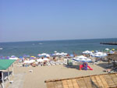

The beach Arkadiya is located in the City of Odessa, Ukraine (a country of the former USSR) right there in the Black Sea. The city is very well known in the Country because of its history and cultural monuments.
The beach is really beautiful and very comfortable. During the summer time many tourists come to Odessa to take a rest and to enjoy the weather. Alexander Pushkin, The Great Poet of Russia, lived here long time ago.
Running text around graphics